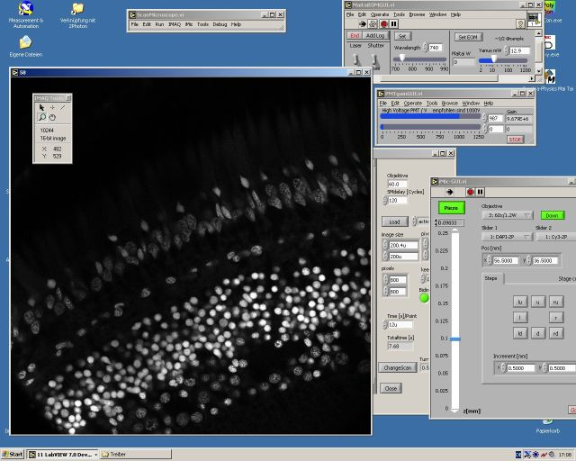

Christian Seebacher
This page
BioImaging
Zentrum der LMU
My Private Homepage
Labview Scanning Software "Colibri"

Documentation
Setup a scanning Microscope
Link to the revision system SVN trac
SVN link tortoise client software
zip file 5.Oct.2006 (6MB)
Sample images and movies
Communication in Colibri
Theory of synchronizing galvos and acquisition
ScanControl Dataformat
Runtime for TIFF-Metadata get LV Run-time here
last update 10.2006
seebacher@biz.uni-muenchen.de